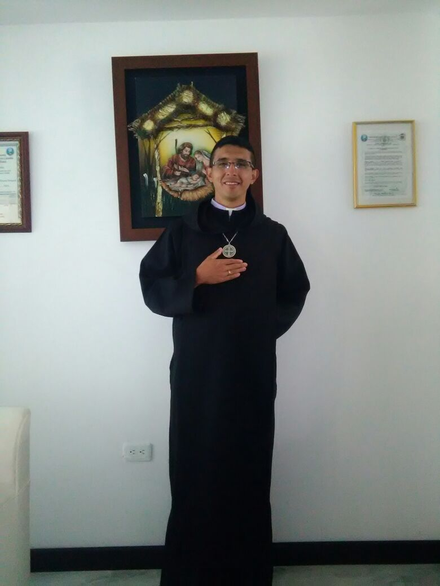

PADRE ARLEY TRIANA
La Misión Jesús Buen Pastor es creada el 20 de Septiembre del 2017 por decreto Diocesano N" 0043 en la ciudad de Pasto Nariño, siendo Obispo Monseñor Edgar Hernán Burbano Villota, en el Barrio Figueroa en la casa de la Sra Liliana Caicedo y con el apoyo de la Sra María Isabel Enrríquez la cual la Misión hoy en día está ubicada en el corregimiento de Cabrera, desde entonces nuestra Misión se ha organizado desde el sentido Pastoral y comunitario ofreciendo un espacio de integración y acompañamiento en la Fé, Doctrina Anglicana, oración y alabanza que fortalece y promueve tanto la liturgia como las actividades de la Pastoral.
En este 2018 se requiere profundizar en las diferentes actividades en la formación de los grupos de Catequistas, proclamadores, monaguillos y adulto mayor para seguir fortaleciendo la Fe en las comunidades guiada por el Revdo Arley Alexander Triana Vergara Sacerdote Misionero Anglicano.

Nuestro Horarios Pastorales.
* Todos los 14 de cada mes celebramos la Eucaristía a Jesús Sanador a las tres p.m.
* Los jueves siete de la noche.
* Los Domingos a las Diez de la Mañana.
Visitas a los enfermos comunicarse a los siguientes números 3106954168 - 3138588912.
Qué Jesús Buen Pastor nos siga llenando de su amor infinito y María Santísima nos guíe con su Humildad.
